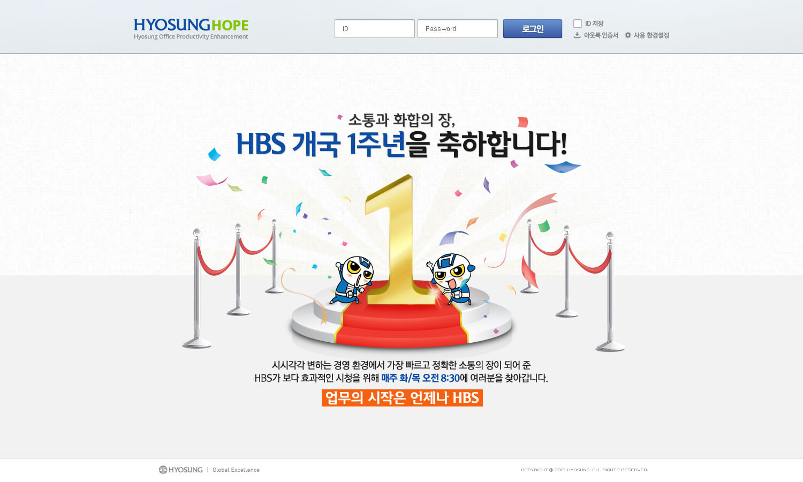
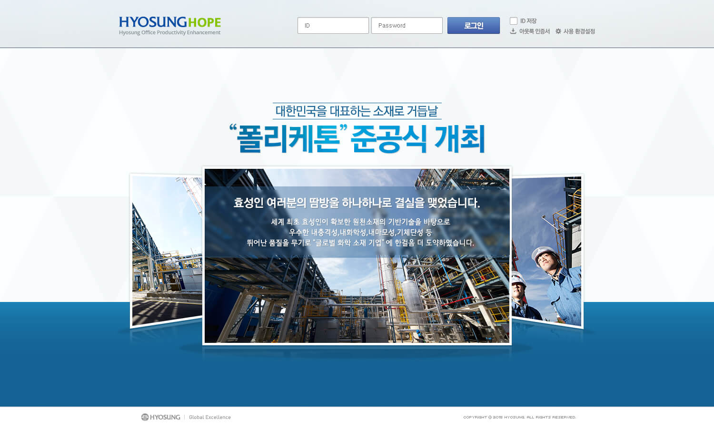
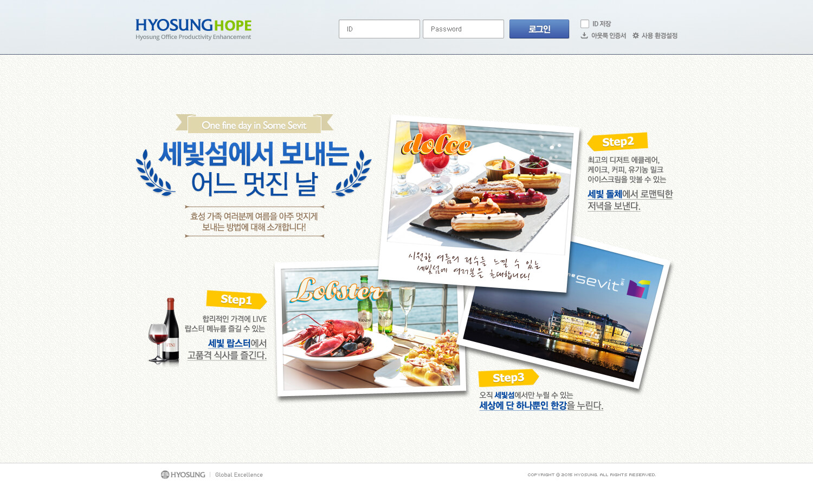
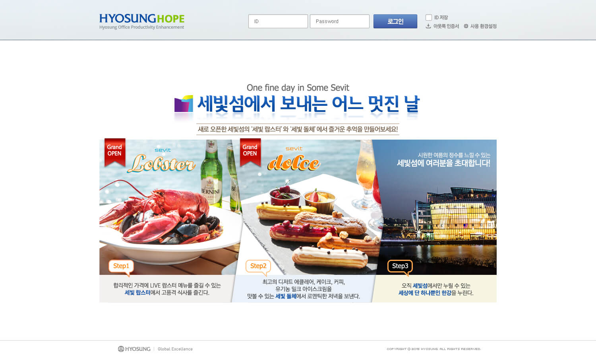
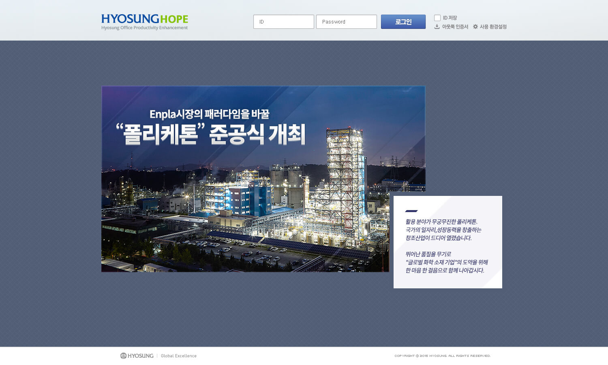

효성그룹
사내 인트라넷 로그인 화면에 대한 디자인입니다. 회사 내 뉴스들을 시각적으로 디자인하여 전달하는 목적을 갖고 있습니다.
로그인 페이지
효성 그룹 사내에서 사용하는 인트라넷 로그인화면의 메인 비주얼영역을 담당하였습니다. 매 주 바뀌는 다양한 주제에 맞춰 디자인 하였습니다.

사내방송 개국 1주년 기념




사내행사 홍보 디자인시안
사내 인트라넷 로그인 화면에 대한 디자인입니다. 회사 내 뉴스들을 시각적으로 디자인하여 전달하는 목적을 갖고 있습니다.
효성 그룹 사내에서 사용하는 인트라넷 로그인화면의 메인 비주얼영역을 담당하였습니다. 매 주 바뀌는 다양한 주제에 맞춰 디자인 하였습니다.
사내방송 개국 1주년 기념
사내행사 홍보 디자인시안